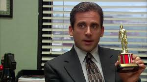
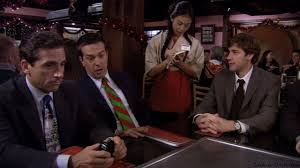
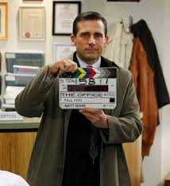
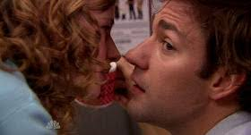
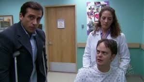
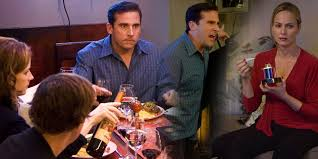
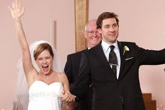
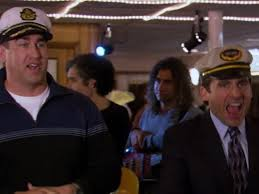

| Temporada 2 |
"The Dundies" |
Michael organiza la ceremonia anual de Dundies en un Chili's, donde todos reciben premios absurdos.
Este episodio establece el tono de humor incómodo y memorable que define la serie.
|
 |
| Temporada 3 |
"Benihana Christmas": |
Después de ser rechazado por Carol, Michael intenta encontrar consuelo en dos camareras de Benihana.
Mientras tanto, el resto de la oficina organiza fiestas navideñas separadas.
|
 |
| Temporada 7 |
"Goodbye, Michael" |
Michael se prepara para dejar Dunder Mifflin y mudarse a Colorado con Holly.
Este episodio es emotivo y marca la salida de Steve Carell de la serie.
|
 |
| Temporada 5 |
"The Surplus": |
Michael debe decidir cómo gastar un excedente presupuestario.
Mientras tanto, Jim y Pam intentan encontrar tiempo a solas en la oficina.
|
 |
| Temporada 2 |
"The Injury" |
Michael sufre quemaduras de tercer grado en el pie y exige atención y simpatía de sus compañeros de trabajo.
Dwight también sufre una conmoción cerebral mientras intenta ayudar a Michael.
|
 |
| Temporada 4 |
"Dinner Party" |
Pam, Jim, Angela y Andy asisten a una cena incómoda en casa de Michael y Jan.
Las tensiones entre Michael y Jan se hacen evidentes, creando momentos hilarantes y perturbadores.
|
 |
| Temporada 6 |
"Niagara" |
Jim y Pam se casan en Niagara Falls.
Este episodio está lleno de momentos emotivos y cómicos, incluyendo un video viral de la boda creado por los compañeros de trabajo.
|
 |
| Temporada 2 |
"Booze Cruise" |
El equipo de Dunder Mifflin realiza un crucero motivacional liderado por Michael.
Las interacciones entre los personajes y los intentos fallidos de
Michael de ser un líder hacen de este episodio un clásico.
|
 |